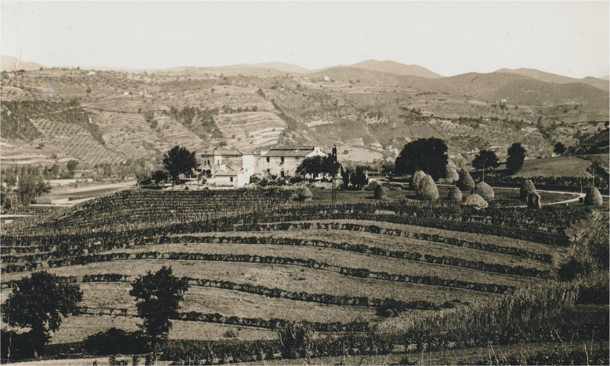
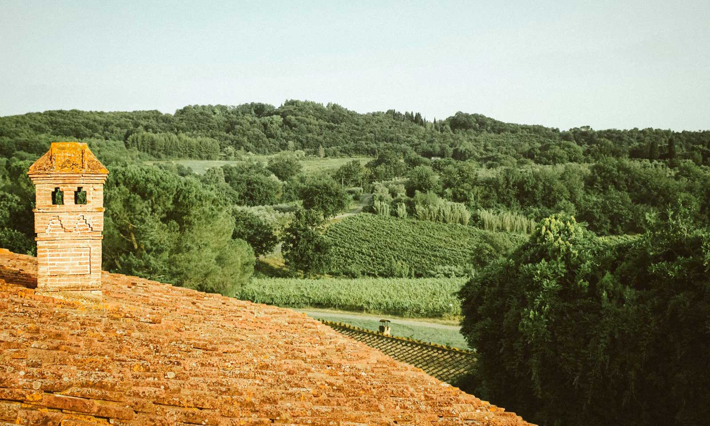
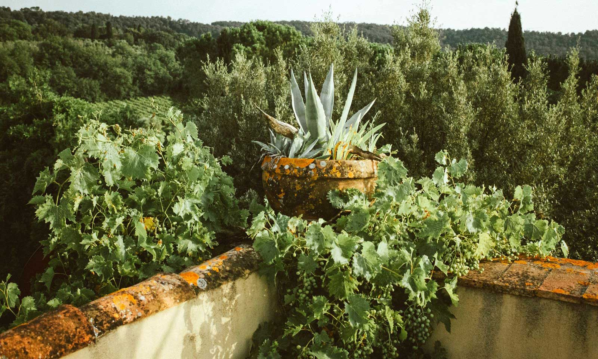

Antica Fattoria San Giovanni è un luogo dove vino, natura e cultura si fondono col suono del mare in sottofondo. Uniamo persone con la voglia di far crescere culturalmente la nostra terra. Da questi elementi nasce l’esperienza di Antica Fattoria San Giovanni: vini fatti per cantare.


